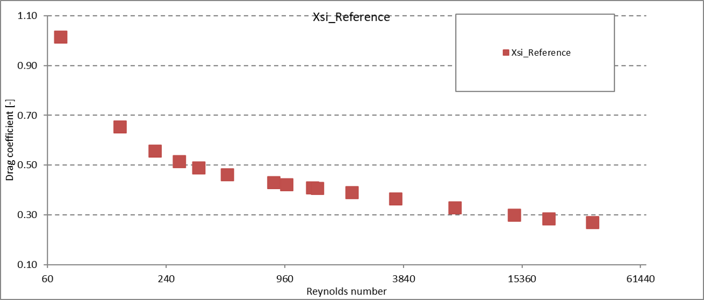
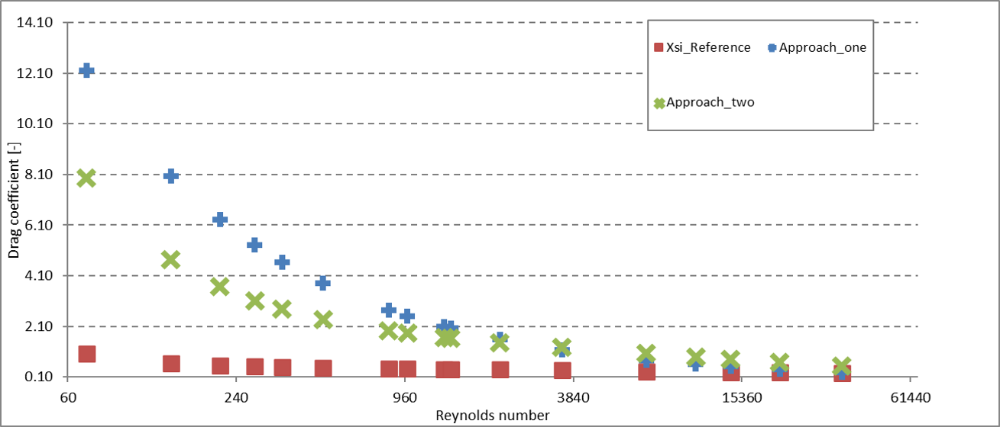
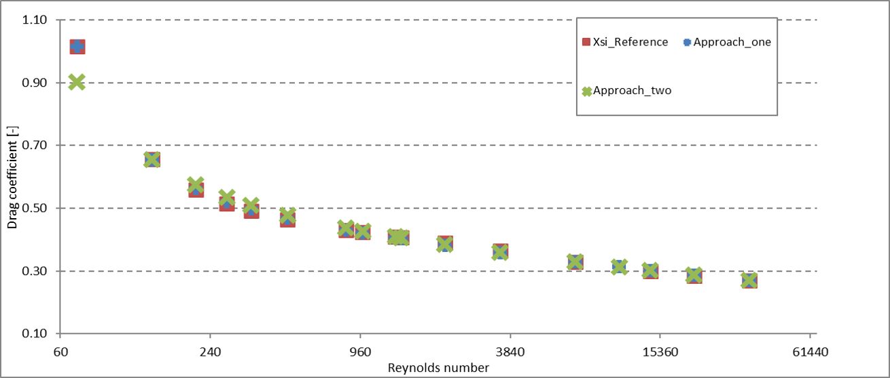

2 Calibration thermal calculation
Overview
Often operators and manufacturers of heat exchangers are faced with the problem that they want to calculate their heat exchangers, but the common analytical or semi-analytical approaches do not match the experience or measurements data. Or an already existing design software, which was developed for a heat exchanger, cannot be transferred to a general approach. As soon as the size, the flow regime, the medium or other important process and geometry parameters are changed, the results of the simulation and the reality diverge. The solution can be "state of the art" design algorithms that can be adapted to your specific requirements using your know-how and measured values. Together we can find a software solution to design your heat exchangers robustly and accurately.
Prerequisites
First, characteristic dimensions must be identified for the apparatus. For a plate heat exchanger these are usually:- plate width
- plate length
- Effective heat exchanger area
- chevron angle and pattern
- inlet area
The purpose of a calibration can be to provide a design basis for a plate type with a particular embossing type. At best, this design basis is applicable to plates with this chevron or embbossing type and a different length or width. Calibration for different embossing angles, on the other hand, is difficult to imagine because the flow pattern is too much influenced by the embossing pattern of the plate. In addition, critical process parameters must be defined for certain applications, which are varied during the measurement. For some process parameters, it is recommended to determine discrete ranges. Examples of process parameters are:
- Reynolds range (turbulent and laminar flow regimes)
- temperature
- pressure
- Vapor content
- Various media
When creating the measurement results, it is recommended to keep all parameters fixed while varying one parameter.
Example calibration of gasketed plate heat exchanger
For a plate heat exchanger, the largest possible Reynolds range was tested for one plate. The following friction coefficients could be calculated from the resulting pressure losses:

For the calibration constants, numerous sets of coefficients are available in the literature. In this case, two different approaches were compared for the laminar region. With the starting values for the coefficients recommended by the literature, the two approaches used gave the following results:

By adjusting the coefficients, a good agreement of the measurement results with the calibration can be found.
